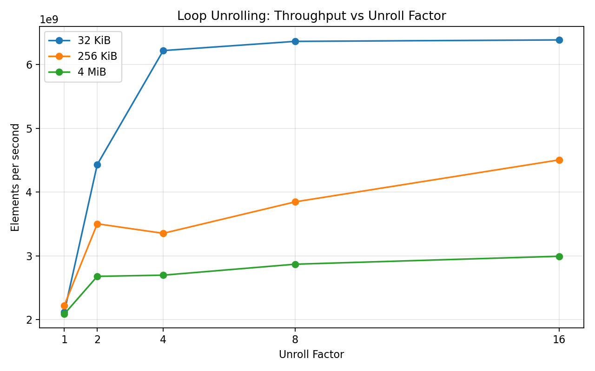
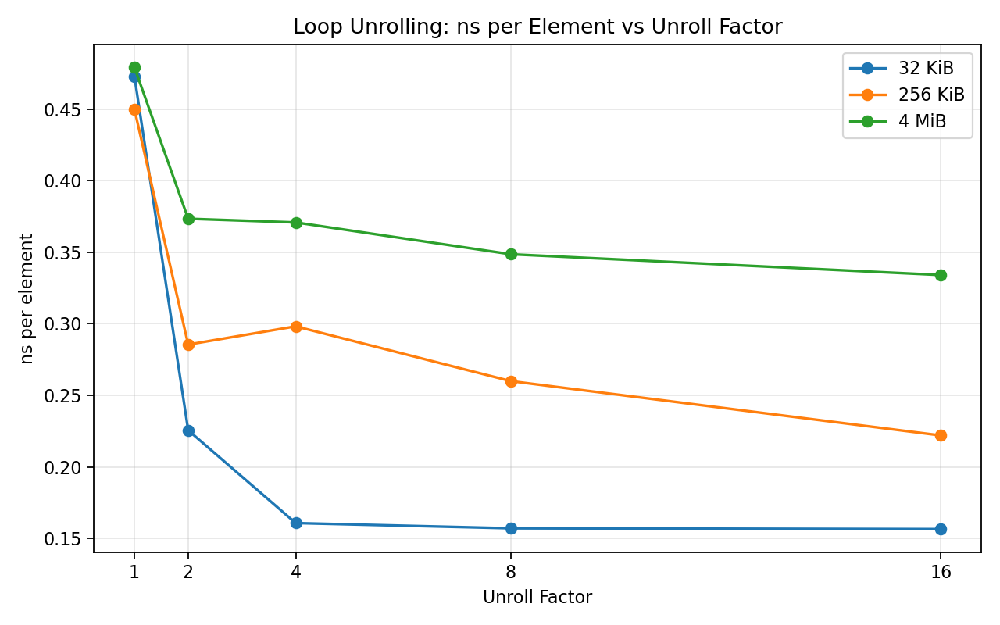
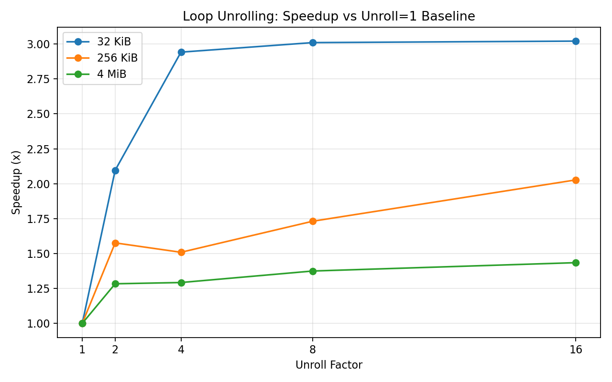

02-loop-unrolling¶
Modern compilers often apply loop unrolling automatically, but what does it really do at the microarchitectural level?
In this lab, we isolate loop unrolling and measure its impact on a simple scalar workload.
🔧 Experiment Setup¶
We use a simple array summation kernel:
- Scalar reduction (single accumulator)
- Manual loop unrolling (1, 2, 4, 8, 16)
- Auto-vectorization disabled (
-fno-tree-vectorize)
We vary working set sizes:
- 32 KiB → L1-friendly
- 256 KiB → L2-ish
- 4 MiB → larger, memory influence
📊 Results¶
Throughput¶

ns per Element¶

Speedup¶

🔍 First Observation¶
Loop unrolling clearly improves performance:
- 32 KiB → ~3x speedup
- 256 KiB → ~2x
- 4 MiB → ~1.4x
But the shape of the curves matters more than the numbers.
⚠️ Key Pattern: Early Saturation¶
For the 32 KiB case:
- Unroll 1 → 4: huge improvement
- Unroll 4 → 16: almost no change
Even though we continue to reduce work inside the loop, performance stops improving.
This is the first important clue.
🧠 What Is Actually Happening?¶
To understand this, we look at hardware counters using perf stat.
🔬 Microarchitectural Breakdown¶
Unroll = 1¶
- ~822M branches
- ~3.29B instructions
- IPC ≈ 3.98
- Branch miss rate ≈ 0.03%
Unroll = 4¶
- ~207M branches (4× reduction)
- ~1.65B instructions (2× reduction)
- IPC ≈ 5.71 (peak)
Unroll = 16¶
- ~52M branches (16× reduction)
- ~1.03B instructions
- IPC ≈ 3.68 (drops)
💡 Insight #1: This Is NOT About Branch Prediction¶
Branch miss rate is already extremely low.
Loop unrolling does not help because branches are mispredicted.
It helps because branches are executed less often.
💡 Insight #2: Instruction Density Improves¶
Per-element cost:
- Unroll 1 → ~4 instructions
- Unroll 4 → ~2 instructions
- Unroll 16 → ~1.26 instructions
This directly explains the large speedup.
💡 Insight #3: Why Performance Stops Improving¶
At unroll 4:
- Loop overhead is mostly eliminated
- Remaining cost is no longer loop control
Even though:
- Instructions ↓
- Branches ↓
Performance no longer improves.
The bottleneck has shifted.
💡 Insight #4: IPC Reveals the Sweet Spot¶
- Unroll 4 → highest IPC
- Unroll 16 → lower IPC
This suggests:
- Front-end pressure
- Register pressure
- Scheduling inefficiency
Too much unrolling can reduce execution efficiency.
💡 Insight #5: Working Set Size Changes Everything¶
| Working Set | Behavior |
|---|---|
| 32 KiB | Early saturation |
| 256 KiB | Gradual improvement |
| 4 MiB | Memory influence dominates |
- Small data → loop overhead dominates
- Large data → memory becomes more important
🧾 Final Takeaway¶
Loop unrolling improves performance by:
- Reducing branch frequency
- Reducing loop-control instructions
- Increasing straight-line execution
But:
- Gains saturate quickly
- Beyond that, other bottlenecks dominate
🔥 One-Line Summary¶
Loop unrolling is not a branch prediction optimization —
it is a control overhead reduction technique, and its benefit is bounded by the real bottleneck of the system.